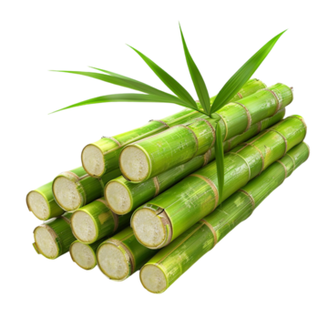
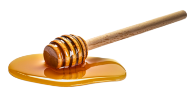
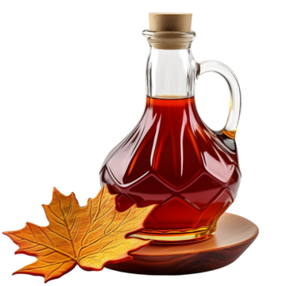

Alimentos que contienen Sacarosa
Fuentes naturales de Sacarosa

Caña de azúcar
Principal fuente de sacarosa comercial

Remolacha azucarera
Segunda fuente más importante de sacarosa

Dátiles
Contienen aproximadamente 80% de sacarosa natural

Miel
Contiene 1-5% de sacarosa natural

Jarabe de arce
Contiene 60-70% de sacarosa
Alimentos que contienen Lactosa
Fuentes naturales de Lactosa

Leche animal
Contiene 4.8% de lactosa en promedio

Yogures
Contenido reducido (3-4%) por fermentación

Quesos frescos
Hasta 2.5% de lactosa

Crema de leche
Contiene 2-3% de lactosa